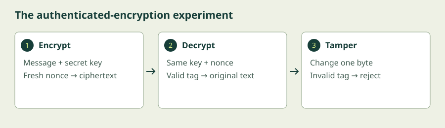

Introduction to Cryptography
Discover how a key turns a readable message into ciphertext, why encryption needs authentication, and what happens when a protected message is altered.
Begin the lesson ↓By the end, you can…
- Distinguish encryption, encoding, hashing, and message authentication.
- Explain symmetric keys, block ciphers, and cipher modes at an intuitive level.
- Describe authenticated encryption and safe nonce use.
- Encrypt, decrypt, and tamper with a message using AES-GCM in the browser.
Keep a secret. Detect a change.
1. Four transformations with different jobs
Plaintext is the original information; ciphertext is its encrypted form. Encryption uses an algorithm and a key to make information unreadable to someone without the right key. Decryption reverses the process. The key is the secret, while the algorithm can be public and carefully studied.
Encoding changes representation so data can be carried or displayed. Base64 is an encoding: anybody can reverse it without a secret. Hashing produces a fixed-length digest, like a fingerprint of data. A cryptographic hash is designed to make it difficult to reverse the digest or find different inputs with the same digest. It is not encryption and is not decrypted.
A hash alone does not authenticate a message. An attacker able to change a file may also replace its hash. A message authentication code, such as HMAC, uses a shared secret to help a recipient detect changes and establish that someone with the secret produced it. All holders of that shared key can create valid codes; this differs from a public-verification digital signature.
2. Symmetric encryption and block ciphers
In symmetric encryption, both sides share a secret key. Think of two people with copies of the same lock key. It is efficient for large amounts of data, but getting the key to the other person safely is a separate problem.
A block cipher transforms a fixed-size block using the key. AES operates on 128-bit blocks, which are 16 bytes. Its supported key sizes are 128, 192, and 256 bits; the block size stays the same. You do not need to perform its internal mathematics to use a trusted implementation.
Real messages are longer than a block. A mode of operation describes how to use the cipher across a message. ECB independently encrypts each block, allowing repeated plaintext blocks to reveal patterns; it is unsuitable for general message protection. CBC and CTR have different rules and, by themselves, do not supply message authentication. Choose an established authenticated construction rather than combining pieces casually.
3. Encryption also needs tamper detection
Authenticated encryption protects confidentiality and detects unauthorised modification. AES-GCM is one widely used example. Its output includes ciphertext and an authentication tag. On decryption, the tag is checked. If the key, nonce, ciphertext, tag, or authenticated associated data is wrong, verification fails and the plaintext must not be used.
Associated data is information authenticated without being encrypted, such as a message type. The receiver must supply the same associated data. This lets a protocol bind protected data to its context. Our small lab omits associated data to keep the first experiment focused.
A nonce is a value that must not repeat with the same key. For GCM, 12-byte nonces are customary. A nonce is not secret; it can travel with the ciphertext. Reusing one with a GCM key can seriously damage confidentiality and authentication. This lab generates a fresh random nonce for each message. A production system must manage nonce uniqueness and usage limits across restarts and many encryptions.
4. The surrounding system still matters
Good cryptography cannot protect a message before encryption or after decryption on a compromised device. Key storage, access control, backups, and deletion matter. If a key is lost, authorised recovery may become impossible; if it is stolen, attackers may read protected data. Use established tools and protocols with managed key lifecycles.
Passwords are usually less unpredictable than randomly generated keys. A password-derived key needs a suitable key-derivation function and parameters; a password database needs a purpose-built password hashing method with salts. A single fast SHA-256 hash is not an adequate password-storage design.
The displayed Base64 is just a readable representation of encrypted bytes. It is AES-GCM and its secret key that provide protection. This teaching lab keeps a temporary key in page memory and discards it on refresh. Use fictional text only.
Another way into the ideas
Choose the written lesson or combine these visual explanations with the guided exercise. The videos cover selected concepts; use the short written explanations to fill the remaining objectives.
Cryptography: Crash Course Computer Science #33
Crash Course
Start with this broad introduction to encryption and key exchange. Then watch the AES explanation and use the lab to learn why tamper detection matters.
Watch on YouTube if playback is blocked. Use YouTube’s captions where available; the written lesson provides a complete learning path.
AES Explained (Advanced Encryption Standard)
Computerphile
An optional deeper visual explanation of AES. Focus on fixed-size blocks and the role of the key; you can skip the matrix mathematics. Read the authenticated-encryption explanation and run the tampering experiment below.
Watch on YouTube if playback is blocked. Use YouTube’s captions where available; the written lesson provides a complete learning path.
Encrypt a message and detect tampering
Use your browser’s built-in Web Crypto implementation. A modern browser and HTTPS (or localhost for local use) are required. Your fictional message and temporary key stay in this page.
Allow 20–30 minutes. Exercises reset when you reload or leave. They do not save progress or submit your entries.
- Enter a short fictional message, such as Class starts at 7. Click Encrypt. Compare the ciphertext with your original text.
- Click Decrypt. You should recover the exact original message. The lab uses a temporary AES-256 key, a fresh 12-byte nonce, and a 128-bit authentication tag.
- Click Tamper, then Decrypt again. One ciphertext byte changes; the authentication check should fail.
- Click Encrypt to create a new valid message. Repeat with the same plaintext: the ciphertext should change because a new nonce is used. Refresh clears the key and lab state.

Show the solution and troubleshooting
Decrypting unchanged ciphertext recovers Class starts at 7.. After Tamper, decryption reports an authentication failure. The checker cannot tell whether the cause is accidental damage, deliberate alteration, or incorrect inputs; it must reject the result.
Repeated encryption of the same message produces different output because the nonce changes. The lab displays the nonce separately; the encoded ciphertext includes the tag. The key is not displayed or saved.
If you see “Web Crypto unavailable”, use a current browser on the hosted HTTPS site or serve the local files using localhost. If asked to encrypt first, click Encrypt before Decrypt or Tamper. Refreshing intentionally discards the key. This exercise is not a tool for storing important secrets.
Check your understanding
Does sending the nonce with the ciphertext expose the secret key?
Compare your answer
No. The nonce is public. Its required property is uniqueness under the same key. Protect the secret key and follow the chosen mode’s rules.
What to take with you
- Encoding represents data; encryption conceals it; a hash alone does not authenticate it.
- AES has a fixed block size and needs a suitable mode for messages.
- Authenticated encryption detects tampering as well as protecting confidentiality.
- Use trusted implementations and manage keys and nonces carefully.
Keep exploring
Independent educational material. External videos and resources belong to their creators; inclusion does not imply endorsement. References checked 6 October 2026.